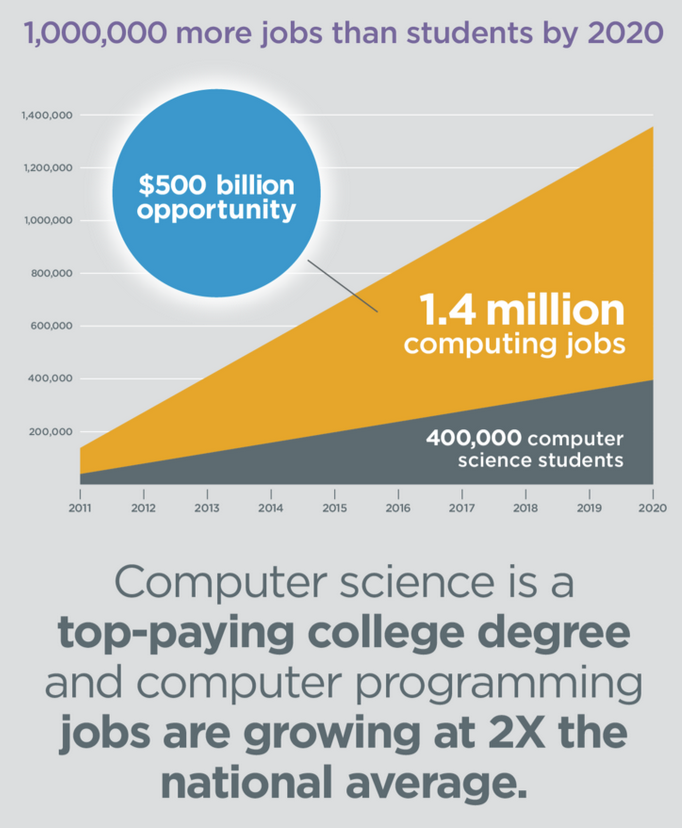

When you graduate from college in 2020, it is estimated that there will be at least 3 job offers for every computer science graduate. In fact, computer programming jobs are growing at more than two times the national average.

from:
https://code.org/stats